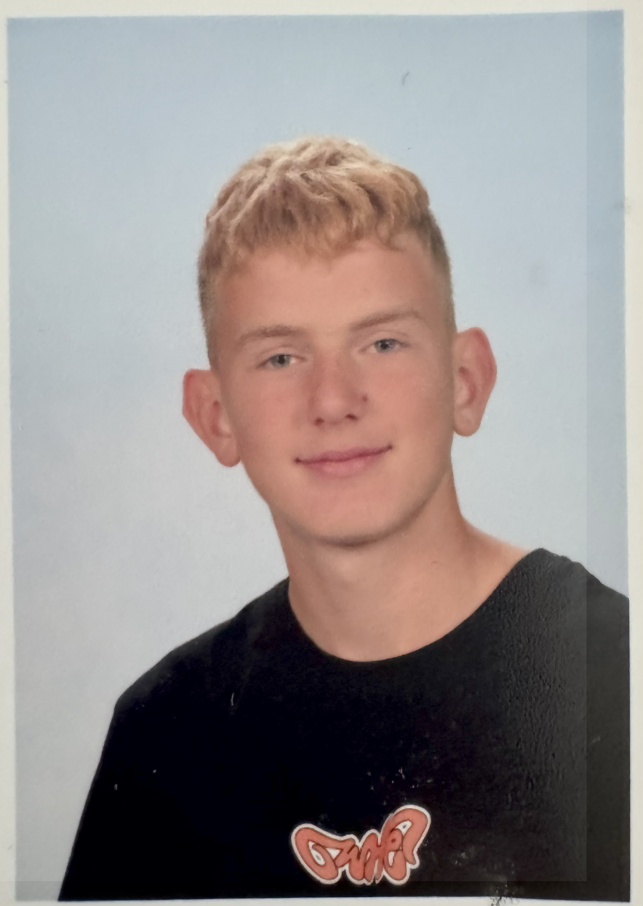

Benjamin Wolka, élève

- Adresse : 13 ru du Touquet à Marquette
- Téléphone : 07 81 12 42 28
- email : Benyuri2501@gmail.com
Objectif
Devenir un joueur de basket professionnel
Expérience
Joueur de Basket-ball de N3 et D1
Année de naissance: 2010
- Formation d'arbitre de basket-ball
- Formation des gestes des premiers secours
- Brevet des collèges
- Stage de seconde du 10/02 14/02 dans le coaching dans l'athlétisme
Je suis élève de seconde GTB à
Lycée la salle lille
Voyages
Turquie ,
Grèce,
Crète,
Cap Vert,
Zanzibar,
Thaïlande,
Ile Maurice...
Curiosité pour les cultures et paysages